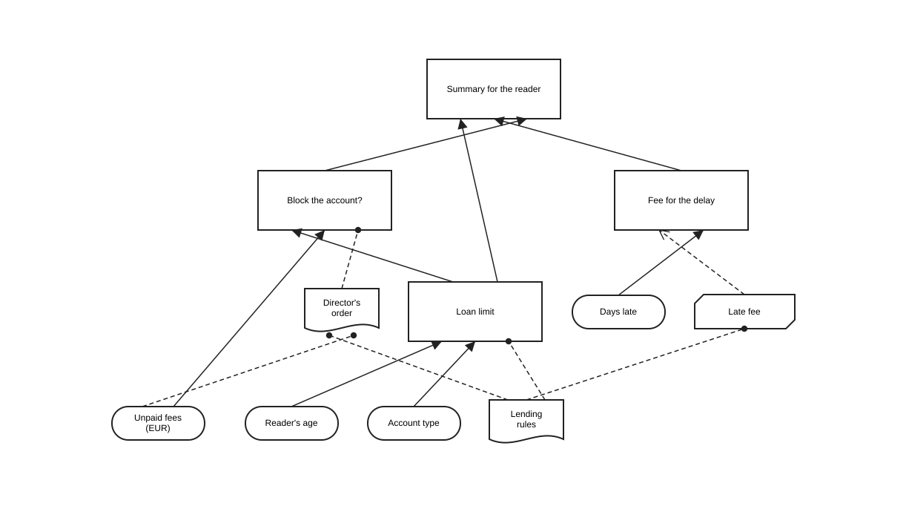
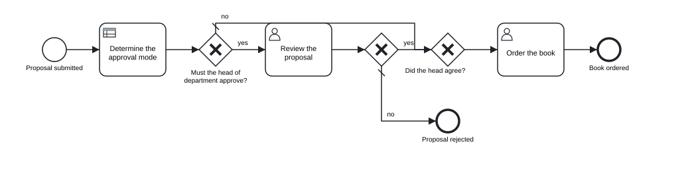

Chapter 9 Decisions with DMN and FEEL
In this chapter you will write decision tables with inputs, outputs, hit policies, aggregations, allowed values and default outputs · build decision requirements graphs from decisions, input data, knowledge sources and business knowledge models · express decision logic as literal expressions, contexts, lists, relations, invocations and functions · declare DMN types · write FEEL at conformance level 3, including names with spaces, dates and durations · test decisions with tok eval · call a decision from a process with a business rule task · export and import DMN files, and read the DMN TCK results as evidence of conformance
Many steps of an information process are decisions taken by rules: how many books a reader may borrow, whether a request needs the head of department’s approval, how much a late return costs, in which mode a file may be made available. When such rules are hidden in a task called “Decide on the request”, the process model says that a decision is taken but not how. DMN (Decision Model and Notation), the companion standard of BPMN, describes the decision itself: its inputs, its rules, and the other decisions and sources of knowledge it depends on.
tok writes decisions in the same text as processes. A document of language 1.0 describes complete DMN 1.5 decision models, evaluates them with tok eval, exports them as DMN files with diagrams, and imports DMN files written by other tools. All expressions are written in FEEL, the expression language of DMN.
9.1 A first decision table
The loan limit of a university library depends on the age of the reader and the type of the account:
tok 1.0 "Loan limits"
inputdata age "Reader's age" type=number
inputdata account "Account type" type=string
decision limit "Loan limit" requires="age account" hit=first
| age: number | account: string || limit: number || note |
| < 18 | - || 5 || minors |
| >= 18 | "student", "doctoral" || 15 || students |
| >= 18 | "staff" || 30 || university staff |
| - | - || 10 || everyone else |The document has three statements. The two inputdata lines declare the input data of the decision: the information that comes from outside, with a FEEL type. The decision line declares the decision, says with requires= which elements it depends on, and chooses the hit policy. Its block is a decision table:
- The first row is the header. The cells before
||are the inputs, the cells after it the outputs; each cell isname: type. An input is a FEEL expression, usually just the name of input data; an output is the name of the result. - Every further row is a rule. Its input cells are unary tests applied to the input values:
< 18,>= 18,"staff", a list of values"student", "doctoral", or-for any value. Its output cells are FEEL expressions that give the result. - An optional last column, after a second
||, is the annotation of each rule: a short explanation for the reader, exported as a rule annotation.
The types of the header are FEEL types: string, number, boolean, date, time, date and time, days and time duration, years and months duration, list, context, any, or a DMN type of the document (see Types).
9.1.1 Testing with tok eval
A decision table is a small program, and it should be tested like one. tok eval FILE DECISION name=value … evaluates a decision for given input values and prints its result as JSON:
tok eval 09-loan-limit.tok limit age=20 account=student
15
tok eval 09-loan-limit.tok limit age=16 account=staff
5
tok eval 09-loan-limit.tok limit age=40 account=guest
10The decision is named by its identifier. Each argument is name=value, where name is the FEEL name of input data. A value is read as true or false, as a number, as JSON when it is a JSON object or list (copies='[{"year": 1932}]'), and otherwise as text. Text given to input data of a date or time type is read as that type (due=2027-03-01). Input data that is not given is null. Put an argument in quotes when the name or the value contains spaces: "Unpaid fees=80".
The exit code is 0 for a result, 1 when the document has errors or a hit policy is violated (below), and 2 for an unknown decision or an argument that is not name=value.
A decision sees exactly what it requires, nothing else. If the table above did not declare age and account as input data and require them, the names in its header would refer to nothing, both inputs would be null, and every evaluation would fall through to the last rule: tok eval would print 10 for every reader. Declare the inputs of every decision as inputdata and list them in requires=. When a decision uses a name of the document without requiring it, tok check reports the warning R079.
9.2 Hit policies
When several rules of a table match, the hit policy decides what the result is. It is set with hit=:
hit= |
Matching rules | Result |
|---|---|---|
unique (default) |
at most one rule may match | the output of that rule; several matching rules violate the policy |
first |
any number | the output of the first matching rule, in the order of the table |
any |
any number, all with the same output | that output; different outputs violate the policy |
priority |
any number | the output that comes first in the list of output values |
collect |
any number | a list of the outputs of all matching rules; with aggregation= their sum, count, minimum or maximum |
rule-order |
any number | a list of the outputs of all matching rules, in the order of the rules |
output-order |
any number | a list of the outputs of all matching rules, ordered by the output values |
The following document about overdue books shows the less common policies.
tok 1.0 "Overdue books"
inputdata due "Due date" type=date
inputdata returned "Return date" type=date
inputdata value "Value of the copy" type=number
inputdata account "Account type" type=string
# unique: at most one rule may match
decision fee-band "Fee band" requires="account" hit=unique
| account: string || band: string |
| "student", "doctoral" || "reduced" |
| "staff" || "none" |
| not("student", "doctoral", "staff") || "full" |
# priority: the matching rule whose output comes first in the output values wins
decision urgency "Urgency of the reminder" requires="due returned value" hit=priority
| returned - due: days and time duration | value: number = [0..10000] || urgency: string = "urgent", "normal", "none" |
| > duration("P30D") | - || "urgent" |
| > duration("P0D") | > 200 || "urgent" |
| > duration("P0D") | - || "normal" |
| - | - || "none" |
# collect with an aggregation: the points of all matching rules are added up
decision points "Penalty points" requires="due returned value" hit=collect aggregation=sum default="0"
| (returned - due).days: number | value: number || points: number || |
| > 0 | - || 1 || any delay |
| > 14 | - || 2 || more than two weeks |
| - | > 500 || 3 || valuable copy |
# rule order: every matching rule, in the order of the rules
decision notices "Notices" requires="account due returned" hit=rule-order
| account: string | returned > due: boolean || channel: string | text: string |
| "student" | true || "e-mail" | "Your loan is overdue." |
| - | true || "SMS" | "Please return the book." |
# output order: every matching rule, ordered by the output values; a default when none matches
decision channels "Reminder channels" requires="account" hit=output-order default="channel = \"letter\"; cost = 0.8"
| account: string || channel: string = "SMS", "e-mail", "letter" | cost: number |
| "student", "doctoral" || "e-mail" | 0 |
| "student", "staff" || "SMS" | 0.1 |A few features of tables appear here for the first time:
- Input expressions. An input need not be a plain name.
returned - duesubtracts two dates and gives a duration;(returned - due).daystakes its number of days;returned > dueis a boolean. - Input values and output values. A header cell may list the allowed values after
=:value: number = [0..10000],urgency: string = "urgent", "normal", "none". For an output, the order of these values is the priority used bypriorityandoutput-order. These two policies need output values for at least one output (D006). - Aggregation.
aggregation=sum(orcount,min,max) applies tohit=collectwith one output (D007). - Default output.
default="0"gives the result when no rule matches; for several outputs,default="channel = \"letter\"; cost = 0.8". Without a default, no matching rule givesnull(an empty list forcollect,rule-orderandoutput-order, and0foraggregation=count). - Several outputs. With two outputs, each result is a context with both:
{"channel": "SMS", "cost": 0.1}.
For a student who returned a book worth 250 EUR nineteen days late:
tok eval 09-hit-policies.tok fee-band due=2027-03-01 returned=2027-03-20 value=250 account=student
"reduced"
tok eval 09-hit-policies.tok urgency due=2027-03-01 returned=2027-03-20 value=250 account=student
"urgent"
tok eval 09-hit-policies.tok points due=2027-03-01 returned=2027-03-20 value=250 account=student
3
tok eval 09-hit-policies.tok notices due=2027-03-01 returned=2027-03-20 value=250 account=student
[{"channel": "e-mail", "text": "Your loan is overdue."}, {"channel": "SMS", "text": "Please return the book."}]
tok eval 09-hit-policies.tok channels account=student
[{"channel": "SMS", "cost": 0.1}, {"channel": "e-mail", "cost": 0}]The urgency is “urgent” because two rules match (> duration("P0D") with > 200, and > duration("P0D") alone) and “urgent” comes before “normal” in the output values. The points add up the first two rules, 1 + 2. The channels are ordered by the output values, so the SMS comes first although its rule is second. When nothing matches, the defaults apply:
tok eval 09-hit-policies.tok points due=2027-03-01 returned=2027-02-20 value=100
0
tok eval 09-hit-policies.tok channels account=guest
[{"channel": "letter", "cost": 0.8}]9.2.1 Overlapping rules
Under unique, two rules that can match the same input are a mistake in the table. tok check looks for them and reports the warning D010 with an example input:
tok 1.0 "Age bands"
inputdata age "Reader's age" type=number
decision band "Age band" requires="age"
| age: number || band: string |
| < 18 || "minor" |
| <= 26 || "student" |
| > 26 || "adult" |tok check 09-age-bands.tok
09-age-bands.tok:8: warning D010: rules 1 and 2 can both match age=17 (hit policy unique)
09-age-bands.tok: 0 error(s), 1 warning(s), 0 note(s)The analysis covers cells built from literals, comparisons and intervals. tok eval reports a violation when it happens, with exit code 1:
tok eval 09-age-bands.tok band age=16
tok: decision 'band': rules 1, 2 all match (hit policy unique)
tok eval 09-age-bands.tok band age=21
"student"For a 21-year-old only the second rule matches, so the result is correct, but the table is wrong for every minor. Either make the rules exclusive ([18..26]) or choose hit=first and order the rules deliberately. A violated any policy (several matching rules with different outputs) is reported the same way.
9.3 Decision requirements graphs
A real decision rarely stands alone. Whether to block a reader’s account depends on the loan limit, which depends on the reader’s age and account; the fee for a late return depends on a tariff, which is fixed by the lending rules. DMN draws these dependencies as a decision requirements graph (DRG), and its picture as a decision requirements diagram (DRD). It has four kinds of elements:
| tok | DMN element | Shape | Meaning |
|---|---|---|---|
inputdata ID "Label" |
input data | oval | information from outside the decision model |
decision ID "Label" |
decision | rectangle | a question answered by decision logic |
bkm ID "Label" |
business knowledge model | rectangle with cut corners | reusable logic: a function called by decisions |
source ID "Label" |
knowledge source | document shape | the authority behind a decision: a regulation, an order, an expert |
requires="ID …" on a decision, a business knowledge model or a knowledge source lists what it depends on. The kind of each required element gives the kind of requirement: decisions and input data are information requirements (solid arrows), business knowledge models knowledge requirements (dashed arrows), knowledge sources authority requirements (dashed lines with a dot). A decision may require decisions, input data, business knowledge models and knowledge sources; a business knowledge model may require business knowledge models and knowledge sources; a knowledge source may require decisions, input data and knowledge sources. Other combinations are R003, and a cycle of requirements is R076.
tok 1.0 "Lending decisions" doc="Decisions about a reader's account."
inputdata age "Reader's age" type=number
inputdata account "Account type" type=string doc="student, doctoral, staff or guest"
inputdata unpaid "Unpaid fees (EUR)" name="Unpaid fees" type=number
inputdata days-late "Days late" type=number
source rules "Lending rules" kind=regulation uri="https://library.example/rules"
source director "Director's order" requires="rules unpaid" kind=order
bkm late-fee "Late fee" params="days: number, rate: number" type=number requires="rules" expr="days * rate"
decision limit "Loan limit" requires="age account rules" question="How many books may the reader borrow?" answers="a number from 0 to 30" hit=first
| age: number | account: string || limit: number |
| < 18 | - || 5 |
| >= 18 | "student", "doctoral" || 15 |
| >= 18 | "staff" || 30 |
| - | - || 10 |
decision blocked "Block the account?" name="Account blocked" type=boolean requires="limit unpaid director" expr="Unpaid fees > 50 or limit < 1"
decision fee "Fee for the delay" type=number requires="late-fee days-late" invoke=late-fee with="days = days-late; rate = 0.5"
decision summary "Summary for the reader" requires="limit fee blocked" expr="if Account blocked then \"account blocked\" else \"limit \" + string(limit) + \", fee \" + string(fee) + \" EUR\""
Figure 9.1: The decision requirements diagram of the lending decisions, as tok export draws it.
The graph has four input data, two knowledge sources, one business knowledge model and four decisions:
limitis the decision table of the previous sections, now with the authority of the lending rules, aquestion=and the allowedanswers=that DMN records for a decision.blockedis a literal expression:expr="Unpaid fees > 50 or limit < 1". Its FEEL name is given withname="Account blocked", a name with a space.feeis an invocation of the business knowledge modellate-fee:invoke=late-fee with="days = days-late; rate = 0.5"binds each parameter of the model to a FEEL expression.summarycombines three decisions into a sentence for the reader.
Each element has a FEEL name: its identifier, or the value of name= when the name is not a tok identifier (name="Unpaid fees"). Other elements refer to it by that name. The names of a graph are unique (R080). The label is what the diagram shows.
Evaluating a decision evaluates everything it requires, each required decision once:
tok eval 09-library-drg.tok summary age=22 account=student "Unpaid fees=12" days-late=9
"limit 15, fee 4.5 EUR"
tok eval 09-library-drg.tok summary age=22 account=student "Unpaid fees=80" days-late=9
"account blocked"
tok eval 09-library-drg.tok fee days-late=9
4.5A knowledge source has no logic; it documents who stands behind a decision, with an optional kind= and uri=. A decision without any logic is allowed too: it describes a decision that is taken by a person, and its value is null.
9.4 Boxed expressions
The logic of a decision or a business knowledge model is a boxed expression. Tables and literal expressions are the most common; DMN 1.5 has more, and tok writes each of them as one line or a block:
| tok | DMN boxed expression |
|---|---|
expr="FEEL" |
literal expression |
a block of rows with \|\| |
decision table |
a block of rows without \|\|: a header name: type, then rows of FEEL expressions |
relation (a list of contexts, like a small table of data) |
a block of entry NAME … lines, optionally ending with a result … line |
context: named entries computed in order; its value is the result line, or without one the context of all entries |
a block of element … lines |
list |
invoke=BKM with="param = FEEL; …" |
invocation of a business knowledge model |
params="name: type, …" on an entry, result or element line |
function definition, whose body is the logic of the line |
Each line of a context or list has its own logic, which may be a literal expression, an invocation, or a block of its own indented below it (a table, a relation, a nested context or list).
tok 1.0 "Fees and copies"
item copy-t "Copy"
item shelfmark type=string
item year type=number
item condition type=string allowed="\"good\", \"damaged\""
item copies-t "List of copies" collection type=copy-t
inputdata kind "Kind of item" type=string
inputdata days "Days late" type=number
inputdata copies "Copies" type=copies-t
bkm charge "Charge for a delay" params="days: number, rate: number" type=number
entry amount expr="days * rate"
result expr="min([amount, 100])"
# a context with a relation, a function definition, an invocation and a result
decision fee "Late fee" type=number requires="kind days charge"
entry rates
| type: string | rate: number |
| "book" | 0.5 |
| "journal" | 0.2 |
| "audiobook" | 0.3 |
entry rate type=number expr="rates[type = kind].rate[1]"
entry round2 params="x: number" expr="round half up(x, 2)"
entry charged invoke=charge with="days = days; rate = rate"
result expr="round2(charged)"
# a list
decision account-types "Account types"
element expr="\"student\""
element expr="\"doctoral\""
element expr="\"staff\""
# a context without a result: its value is the whole context
decision overview "Overview of the copies" requires="copies"
entry count expr="count(copies)"
entry oldest expr="min(copies.year)"
entry "to repair" expr="copies[condition = \"damaged\"].shelfmark"
entry inspection type=boolean hit=first
| oldest: number || inspection: boolean |
| < 1950 || true |
| - || false |The decision fee is a context with five lines. rates is a relation: a table of data with one row per kind of item. rate filters the relation with FEEL (rates[type = kind].rate[1]: the rate of the row whose type is the kind of the item). round2 is a function definition, local to the context. charged invokes the business knowledge model charge, whose own logic is a context with a result. The result line gives the value of the decision.
account-types is a list. overview is a context without a result: its value is the context of all entries, and one entry, inspection, is a decision table nested in the context. An entry name may be quoted when it has spaces (entry "to repair").
tok eval 09-boxed.tok fee kind=journal days=12
2.4
tok eval 09-boxed.tok fee kind=book days=400
100
tok eval 09-boxed.tok account-types
["student", "doctoral", "staff"]
tok eval 09-boxed.tok overview copies='[{"shelfmark": "A-12", "year": 1932, "condition": "damaged"}, {"shelfmark": "B-7", "year": 1988, "condition": "good"}]'
{"count": 2, "oldest": 1932, "to repair": ["A-12"], "inspection": true}The second result shows the cap of the business knowledge model: 400 days at 0.5 EUR would be 200, and min([amount, 100]) limits it to 100.
A statement has exactly one form of logic; with= needs invoke=; the result line is the last line of its context; element lines are not mixed with entry and result lines. A violation of any of these is R077. hit=, aggregation= and default= need a decision table.
9.5 Types
The inputs and outputs of a decision have types. Simple ones are FEEL types (number, string, date, …, and type expressions such as list<number>). Structured ones are DMN types, declared with item:
item copy-t "Copy"
item shelfmark type=string
item year type=number
item condition type=string allowed="\"good\", \"damaged\""
item copies-t "List of copies" collection type=copy-t| tok | DMN itemDefinition |
|---|---|
type=T |
the base type |
allowed="unary tests" |
the allowed values |
collection |
a list of such values |
a block of item NAME … lines |
the components of a structure (nested to any depth) |
type= on input data, decisions, business knowledge models, lines of boxed expressions and parameters names a FEEL type or a DMN type of the document, by identifier or by name; an unknown type is R081. A value that does not conform to its type becomes null, as DMN 1.5 prescribes. DMN types are exported to the DMN files, not to BPMN; an item that is both a BPMN item definition (structure=, kind=; Chapter 6) and a DMN type is R081.
9.6 FEEL in tok
FEEL (Friendly Enough Expression Language) is the expression language of DMN. In tok it is used everywhere an expression is needed: in decision logic, and in the processes in conditions of flows (when=), conditional events (condition=), script tasks (expr=), loop conditions and the attributes of the executable layer.
In a document of language 1.0 every expression is full FEEL at DMN conformance level 3:
| Feature | Example |
|---|---|
| numbers with 34 significant digits, exact decimal arithmetic | 0.1 + 0.2 = 0.3 is true |
strings, booleans, null and three-valued logic |
"Nr " + string(n), a and b |
| dates, times, durations and their arithmetic | date("2027-03-01") + duration("P30D"), @"2027-07-01" |
| lists, filters and paths | copies[condition = "damaged"].shelfmark, l[1], l[-1] |
| contexts | {kind: "book", rate: 0.5}.rate |
| ranges and unary tests | x in [1..10], x between 18 and 65 |
| iteration and quantifiers | for i in 1..3 return i * 7, some x in l satisfies x > 1 |
| functions | function(x) x * 2, the built-in library (string length, round half up, day of week, list contains, sort, context put, …) |
| types | x instance of list<number> |
Two rules are specific to tok. Expressions are written without the leading = that Camunda uses in its files; the exporter adds it where it is needed. And because expressions stand inside quoted attribute values, a quotation mark inside FEEL is written \": expr="if Account blocked then \"blocked\" else \"open\"".
9.6.1 Names with spaces
FEEL allows names with spaces and with the symbols . / - ' + *, such as Loan date or days-late. A name is resolved against the names of the document: the longest sequence of words that is a name of the decision model (an element, an entry, a parameter, a component of a type, a column) or of a built-in function is read as one name. A tok identifier cannot contain spaces, so an element with such a name gets it with name=:
tok 1.0 "Due dates"
inputdata loaned "Loan date" name="Loan date" type=date
inputdata period "Loan period in days" name="Loan period" type=number
inputdata closed "Days the library is closed" type="list<string>"
decision due "Due date" type=date requires="loaned period" expr="Loan date + duration(\"P\" + string(Loan period) + \"D\")"
decision weekend "Is the due date on a weekend?" type=boolean requires="due" expr="day of week(due) in (\"Saturday\", \"Sunday\")"
decision on-closed-day "Is the library closed on the due date?" type=boolean requires="due closed" expr="some d in closed satisfies date(d) = due"
decision reminders "Reminder dates" requires="due" expr="for i in 1..3 return due + duration(\"P\" + string(7 * i) + \"D\")"
decision summer "Loaned during the summer break?" type=boolean requires="loaned" expr="Loan date in [@\"2027-07-01\"..@\"2027-08-31\"]"tok eval 09-due-dates.tok due "Loan date=2027-07-20" "Loan period=30"
"2027-08-19"
tok eval 09-due-dates.tok weekend "Loan date=2027-07-20" "Loan period=30"
false
tok eval 09-due-dates.tok on-closed-day "Loan date=2027-07-20" "Loan period=30" closed='["2027-08-19", "2027-12-24"]'
true
tok eval 09-due-dates.tok reminders "Loan date=2027-07-20" "Loan period=30"
["2027-08-26", "2027-09-02", "2027-09-09"]
tok eval 09-due-dates.tok summer "Loan date=2027-07-20"
trueDates, times and durations are printed as their FEEL text. An input that does not conform to its type is null, and so is everything computed from it:
tok eval 09-due-dates.tok due "Loan date=2027-07-20" "Loan period=thirty"
nullFEEL as Camunda 8 runs it differs in one visible point: it reads a name with spaces or symbols only in backticks (`Loan date`). When a document is executable for Camunda (Chapter 10), tok export writes such names in backticks in the DMN files; other documents are exported in standard FEEL.
Documents of languages 0.1 to 0.6 use a smaller subset of FEEL (without contexts, filters, iteration, temporal arithmetic and names with spaces), in which an expression outside the subset is the warning F001. In a 1.0 document F001 reports only what tok does not evaluate, externally defined functions. A syntax error is always the error F002.
9.7 Decisions in a process
A process calls a decision with a business rule task:
rule mode "Determine the approval mode" decision=approval-mode result=modedecision= names the decision; result= names the variable that receives its value. Without result=, the variable is the only output of a decision table, or else the FEEL name of the decision. The variables of the process instance are the input data of the decision: here the proposal’s format and price. The following flows use the result in their conditions.
tok 1.0 "Approving a purchase proposal"
start submitted "Proposal submitted"
rule mode "Determine the approval mode" decision=approval-mode result=mode
xor needs-head "Must the head of department approve?"
user approve "Review the proposal"
xor agreed "Did the head agree?"
xor merge
user order "Order the book"
end ordered "Book ordered"
end rejected "Proposal rejected"
flow submitted -> mode -> needs-head
flow needs-head -> approve "yes" when="mode = \"head\""
flow needs-head -> merge "no" default
flow approve -> agreed
flow agreed -> merge "yes" when="agreed = true"
flow agreed -> rejected "no" default
flow merge -> order -> ordered
inputdata format "Format" type=string
inputdata price "Price (EUR)" type=number
decision approval-mode "Approval mode" requires="format price" hit=first
| format: string | price: number || mode: string || annotation |
| "e-book" | - || "head" || licences |
| "print" | <= 150 || "automatic" || cheap print |
| - | - || "head" || everything else |
Figure 9.2: A business rule task that calls the decision approval-mode; the conditions of the following gateway use its result.
Download the model (.tok) Download the BPMN export (.bpmn)
tok eval 09-purchase-approval.tok approval-mode format=print price=99
"automatic"The BPMN standard has no attribute that links a business rule task to a DMN decision. tok keeps the link in the text, checks it (decision= must name a decision of the document), uses it when it simulates the process (Chapter 11), and in an executable document exports it as Camunda’s zeebe:calledDecision, so that the engine evaluates the decision when the task is reached (Chapter 10).
Camunda 8 executes decision tables, literal expressions, contexts, relations, lists, invocations and business knowledge models. In an executable document tok check reports what it does not run: a business knowledge model whose logic is an invocation (C130), a function definition whose body is not a literal expression (C131), and a decision without logic (C132).
9.8 DMN export
tok export writes one DMN 1.5 file for each connected decision requirements graph of the document, named after its first decision, together with a picture of its diagram:
tok export 09-library-drg.tok -o out
out\limit.dmn
out\limit.drd.svgThe DMN file contains the input data, knowledge sources, business knowledge models, decisions, requirements and DMN types of the graph, and a DMNDI diagram laid out automatically, with decisions above what they require. It opens in Camunda Modeler and in the DMN editor of bpmn.io. A document whose decisions are not connected writes one file per graph: 09-boxed.tok gives fee.dmn, account-types.dmn and overview.dmn.
9.9 DMN import
tok import FILE.dmn reads a DMN file of version 1.1 to 1.5 and prints a document of language 0.7, which is also a valid document of every release 1.x. It keeps the decisions, input data, knowledge sources, business knowledge models, requirements, decision logic, types, names and descriptions, and reports what it does not keep. The file 09-special-collections.dmn contains a table of the modes in which special collections are made available (Download the DMN file (.dmn)):
tok import 09-special-collections.dmn
09-special-collections.dmn: TextAnnotation_0rule: textAnnotation is not kept
09-special-collections.dmn: -: the diagram (DMNDI) is not kept; tok lays out the decision requirements diagram again
tok 0.7 "Access to special collections"
decision Decision_0access name="Access mode" hit=first
| materialAge: number | personalData: boolean | purpose: string = "research","official","private" || mode: string = "reading room","anonymised copy","director's consent","refused" || |
| >= 100 | - | - || "reading room" || Old material: no restrictions |
| - | false | - || "reading room" || No personal data |
| - | true | "research" || "anonymised copy" || Research: a copy without personal data |
| < 30 | true | "private" || "refused" || Private purpose, recent material |
| - | - | - || "director's consent" || Everything else |The table keeps its hit policy, its input and output values and the descriptions of its rules, which become annotations. The identifiers of the file are kept, and the name of the decision, “Access mode”, is given with name=. The text annotation and the diagram are reported.
This table was written for a process engine: its inputs materialAge, personalData and purpose are variables of the process, not input data of a decision model. Camunda evaluates it with the variables of the process instance. To evaluate it with tok eval, save the import with -o, declare the three variables as input data and require them, as the tip earlier in this chapter explains. With the header changed to tok 1.0 and the document formatted, the model reads:
tok 1.0 "Access to special collections"
inputdata materialAge "Age of the material (years)" type=number
inputdata personalData "Contains personal data" type=boolean
inputdata purpose "Purpose" type=string
decision Decision_0access name="Access mode" requires="materialAge personalData purpose" hit=first
| materialAge: number | personalData: boolean | purpose: string = "research","official","private" || mode: string = "reading room","anonymised copy","director's consent","refused" || |
| >= 100 | - | - || "reading room" || Old material: no restrictions |
| - | false | - || "reading room" || No personal data |
| - | true | "research" || "anonymised copy" || Research: a copy without personal data |
| < 30 | true | "private" || "refused" || Private purpose, recent material |
| - | - | - || "director's consent" || Everything else |tok eval 09-special-collections.tok Decision_0access materialAge=20 personalData=true purpose=private
"refused"
tok eval 09-special-collections.tok Decision_0access materialAge=45 personalData=true purpose=research
"anonymised copy"Decision services, imports of other models, text annotations, associations and groups, organisation units, performance indicators and the diagram are not kept, and the import names each of them. The DMN files that tok exports import back to the same document, apart from comments and the order of requires=.
9.10 The DMN TCK as evidence
How do you know that tok eval computes what DMN says? The DMN Technology Compatibility Kit (TCK) is a public collection of DMN models with test cases and expected results, maintained by vendors and users of DMN to measure the conformance of implementations. Its tests are grouped by the compliance levels of DMN: level 2 covers decision tables and simple expressions, level 3 the full language with FEEL, boxed expressions and decision requirements graphs.
tok runs every model of levels 2 and 3 that does not need a feature outside its scope: each model is imported, printed as tok text, read again and evaluated for every test case, and each result is compared with the expected value.
| Level | Models | Models passing completely | Results | Passing |
|---|---|---|---|---|
| 2 | 28 | 28 | 126 | 126 (100.0 %) |
| 3 | 114 | 108 | 3331 | 3313 (99.5 %) |
The test folders left out need what tok does not implement: functions defined externally in Java, decision services, and models that import other models. The 18 results of level 3 that fail have known reasons: dates in time zones whose offset depends on the date (such as Europe/Paris), which would need the IANA time zone database; a unary test of one value used as a range value; two tests that invoke decision services; and a boxed filter whose elements are not booleans. Appendix E gives the full table.
These numbers are the evidence behind the claim that a decision tested with tok eval behaves as DMN 1.5 specifies, and behind the import: each TCK model passes through tok import, so the import keeps everything a decision needs to be evaluated.
9.11 Typical mistakes
The following decision model computes the fee for interlibrary loan copies. It contains mistakes on several layers.
tok 1.0 "Interlibrary loan fees"
inputdata pages "Number of pages" type=number
inputdata delivery "Delivery" type=string
bkm per-page "Price per page" params="pages: number" type=number expr="pages * 0.1"
decision copy-fee "Fee for copies" type=number expr="per-page(pages)"
decision postage "Postage" requires="delivery" hit=first
| delivery: string || postage: number |
| "post" || 4 |
| "e-mail" || 0 | 0 |
decision total "Total fee" type=numbr requires="copy-fee postage" expr="copy-fee + postage +"
decision band "Fee band" requires="total" hit=priority
| total: number || band: string |
| > 50 || "high" |
| - || "low" |tok check 09-decisions-error.tok
09-decisions-error.tok:13: error D002: rule has 3 cells, the header has 2
09-decisions-error.tok: 1 error(s), 0 warning(s), 0 note(s)A malformed table hides the rest of the model, as malformed text does in Chapter 7. After the row is corrected to | "e-mail" || 0 |, the check reports:
tok check 09-decisions-error.tok
09-decisions-error.tok:8: warning R079: 'copy-fee' uses 'pages' (inputdata 'pages') without requiring it; add it to requires=
09-decisions-error.tok:8: warning R079: 'copy-fee' uses 'per-page' (bkm 'per-page') without requiring it; add it to requires=
09-decisions-error.tok:15: error F002: FEEL syntax error: unexpected end of expression (copy-fee + postage +)
09-decisions-error.tok:15: error R081: unknown type 'numbr' (a FEEL type or an item of the document)
09-decisions-error.tok:18: error D006: hit policy priority orders the matching rules by output values; give them for at least one output (name: type = …)
09-decisions-error.tok: 3 error(s), 2 warning(s), 0 note(s)| Code | Problem | Correction |
|---|---|---|
D002 |
a rule with more cells than the header | one cell per column |
R079 |
a decision uses input data and a business knowledge model it does not require | requires="pages per-page" |
F002 |
an incomplete FEEL expression | expr="copy-fee + postage" |
R081 |
a misspelt type | type=number |
D006 |
priority without output values |
band: string = "high", "low", or hit=first |
Exercises
Exercise 9.1
- Repair the fees. Download
09-decisions-error.tokand correct it untiltok checkreports no errors and no warnings. Then evaluatetotalandbandfor 120 pages sent by post. Download the model with errors (.tok) - A table from a regulation. Take a short regulation of your institution (opening hours, loan periods, fees) and write its rules as a decision table with input data and annotations that cite the paragraphs. Test at least five cases with
tok eval, including a boundary value of each comparison. - Hit policies. Write the age bands of
09-age-bands.tokthree times: withuniqueand exclusive rules, withfirst, and withpriorityand output values. Show withtok evalthat the three versions give the same results for the ages 17, 18, 26 and 27. - A decision requirements graph. Model the decision whether a reader may borrow a rare book: it depends on the type of account, on unpaid fees and on a separate decision “Is the reader trusted?”, which depends on the number of past loans. Add the reading room regulation as a knowledge source. Export the graph with
tok exportand open the DMN file in Camunda Modeler. - Boxed expressions. Extend
09-boxed.tokwith a decision that returns, for a list of copies, a list of contexts with the shelfmark and the age of each copy in years (useforand a context). Test it with a JSON list of three copies. - From a process. Add a business rule task to a process of your own that calls one of your decisions, with
result=and a gateway that uses the result. Check the model, export it and find the decision in the filestok exportwrites.